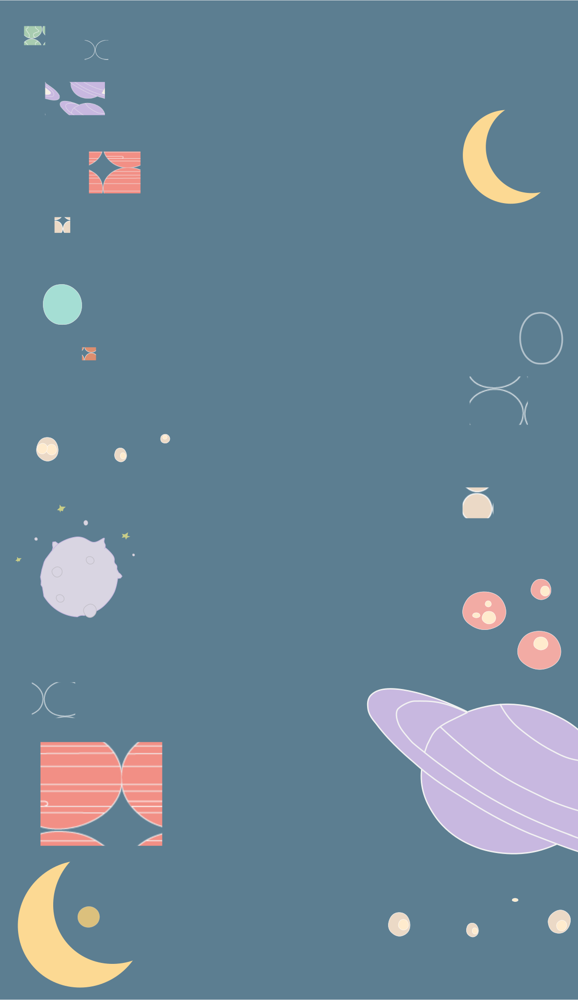

Portfolio Opgave
"with each breath we draw
we are closer to dust
i am not afraid
of becoming a star"
-Milene Minssieux
Velkommen til siden "Om Mig". Her kan du læse lidt om den, der har formgivet dette sted. Om stille dage, dansende idéer og ønsket om at forene det visuelle med det sanselige.
Design er for mig en stille bevægelse mod mening og balance. Gennem design håber jeg at væve mine verdener sammen – at skabe visuelt arbejde, der støtter krop og sind. Måske som freelancer, måske som noget endnu uopdaget.
Min fritid danser i cirkler – mellem toner og trin, ord og stilhed. Jeg skriver digte, danser tango og finder form i det uformelle. I pausen findes rytmen.